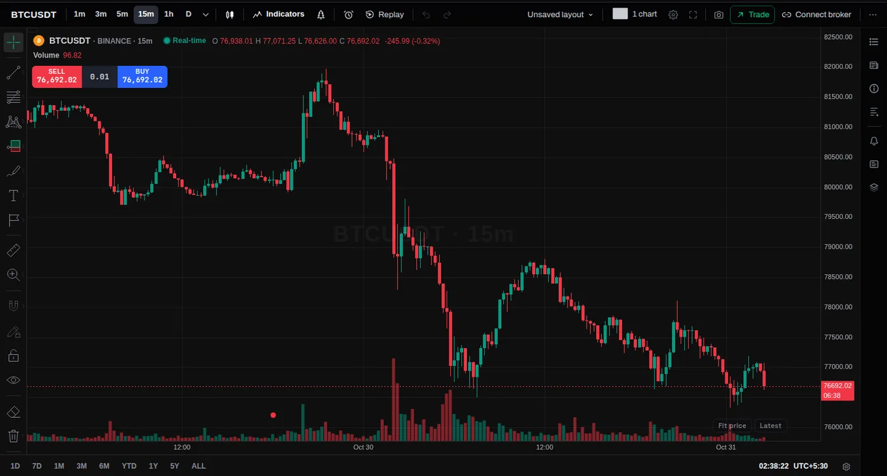
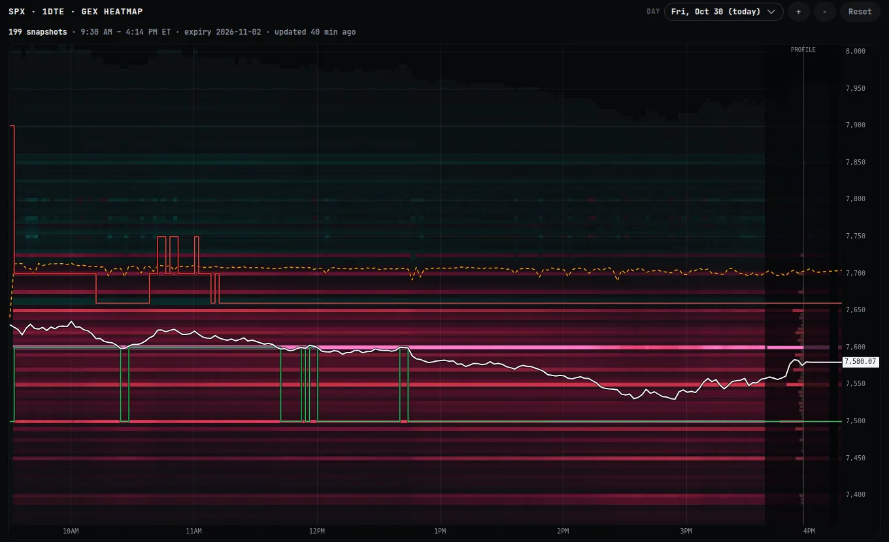
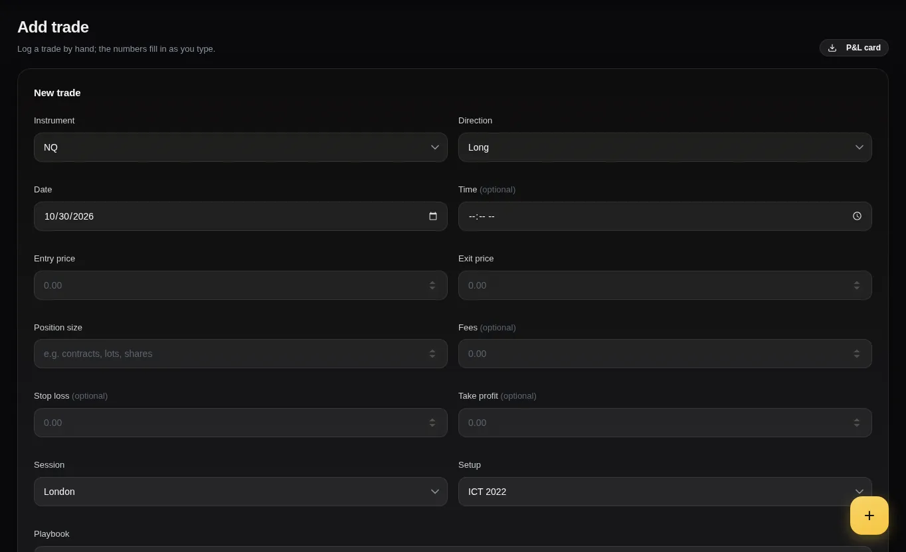
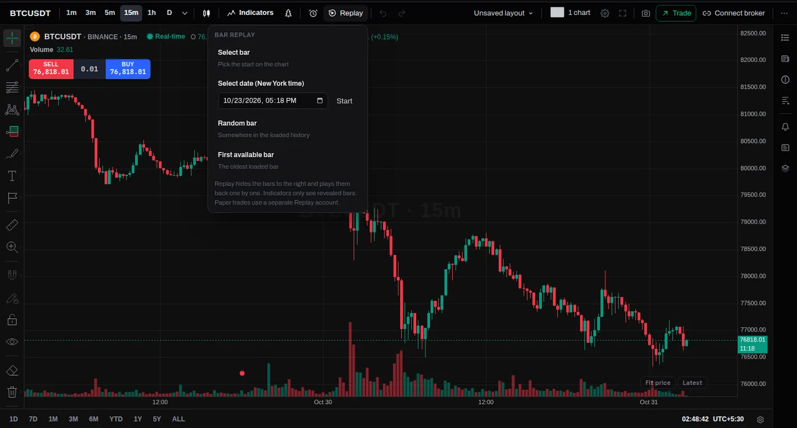
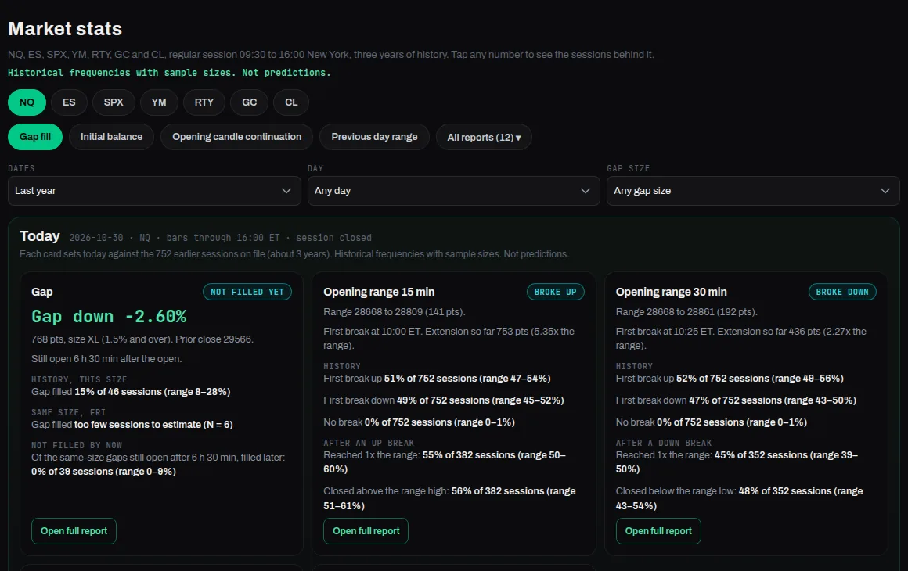
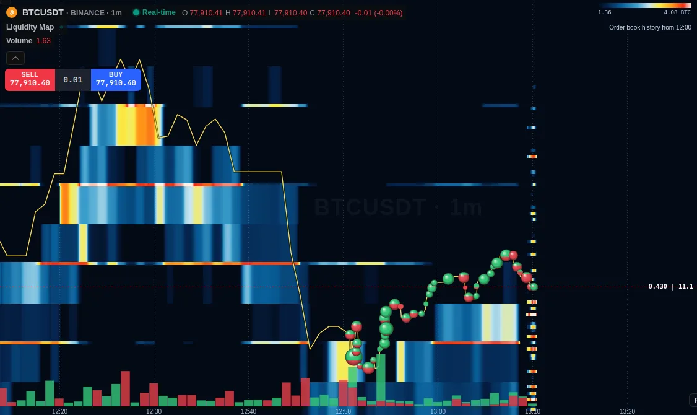
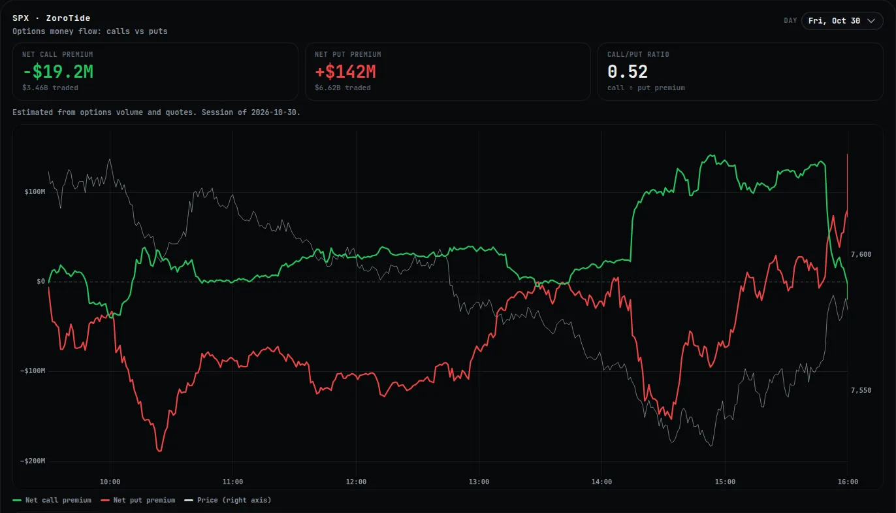
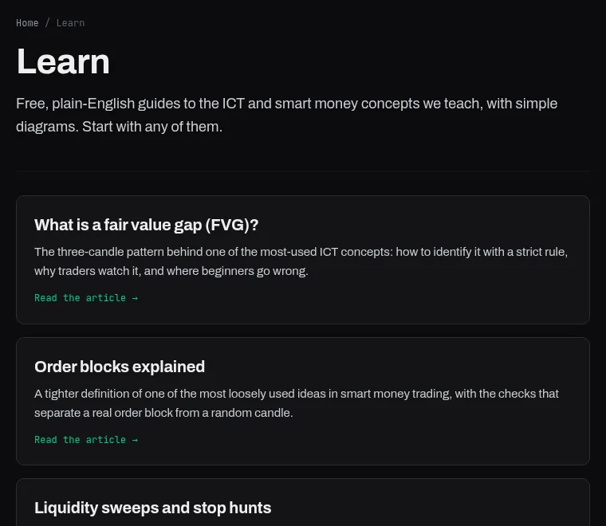
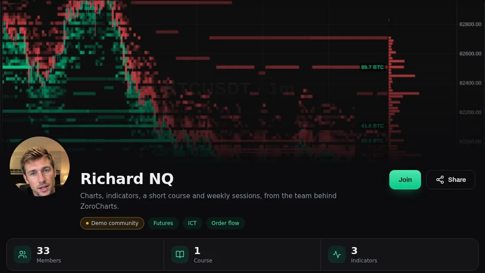
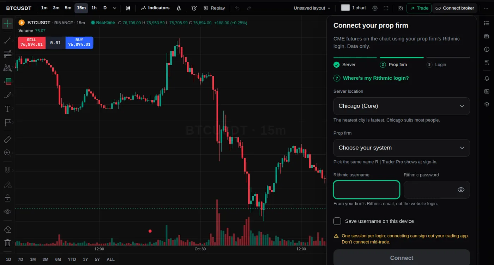

Every trading tool. Free and open. Built by traders, for traders and creators.
Charts, replay, journal and market stats in one fast workspace, free for every trader. Trade better by reviewing what works, then share layouts and publish indicators as a creator.
Prices drawn in milliseconds



Product screenshots with sample data. Floating cards are illustrations.
Watch the app assemble
- 1ZoroCharts
Start with a chart. Futures and crypto, Pine scripts, alerts and paper trading.
- 2Add GEX+
Call wall, put wall and zero gamma, with when each level was updated.
- 3Replay a session
Go back to any past session and step through it bar by bar.
- 4Log it in JournalX
Review what is working. Import from Rithmic to skip the typing.
- 5And the rest
Market Stats, Liquidity Map, ZoroTide, Learn and Creator Hub, all in the same app.

GEX+
JournalXZoroCharts
Free futures and crypto charts with Pine scripts, layouts, alerts and paper trading.
Explore ZoroChartsGEX+
Call wall, put wall and zero gamma on the chart. Every level shows when it was updated.
Explore GEX+
JournalX
A trade journal that shows what is working. Import from Rithmic to skip the typing.
Explore JournalXMarket Stats
How often gaps, ranges and levels played out, with the sample size on every number.
Explore Market Stats
Liquidity Map
Resting orders as a heatmap with trade bubbles. Crypto depth, on Pro.
Explore Liquidity Map
ZoroTide
Net call premium against net put premium since the open. Estimated, for context.
Explore ZoroTide

Creator Hub
Run your own trading community: indicators, courses, events and Discord roles.
Explore Creator Hub
Your prop firm's Rithmic login, on your charts
Connect the Rithmic login your prop firm gave you and ZoroCharts shows live CME futures data. It is data only: TradeZoro never places orders, so you trade at your broker as you do today.
- Works with prop firms that give you a Rithmic login.
- Prefer not to connect? The live futures data add-on gives you live CME futures data without a login.
- Crypto charts are live for everyone, free.

Teach what you trade. Run your own community.
Put your indicators on your members' ZoroCharts, publish courses, host weekly sessions and give paying members a Discord role, all under your name.
- Indicators that run on ZoroCharts, with the source kept hidden.
- Courses and a community feed in one place.
- Events and Discord roles for your members.
Built by traders, for traders
TradeZoro grows with the people who use it. Share what you use, and help decide what gets built next.
Before you start
Is TradeZoro free?
Does TradeZoro place orders for me?
What does the Rithmic connection do?
How fresh is GEX+ data?
Do I need to be an expert?
Can I start my own community?
Open the charts. It is free.
Make an account, load a chart and replay a session in a few minutes.
Education only. Not financial advice.